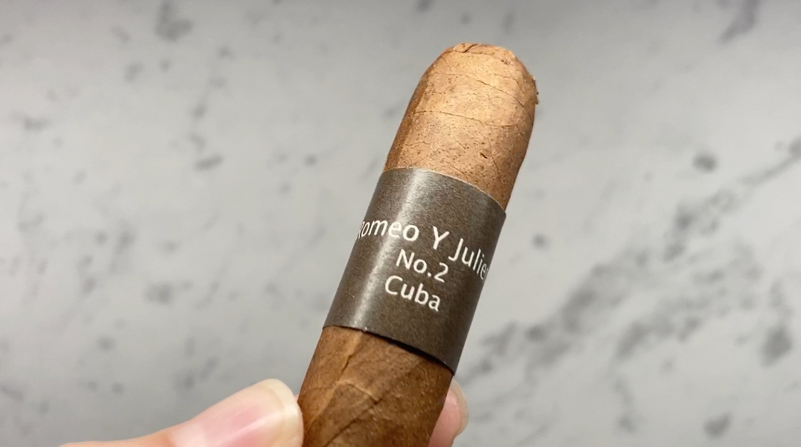
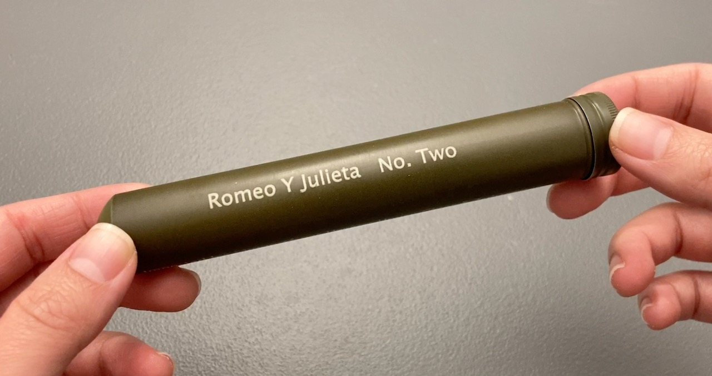
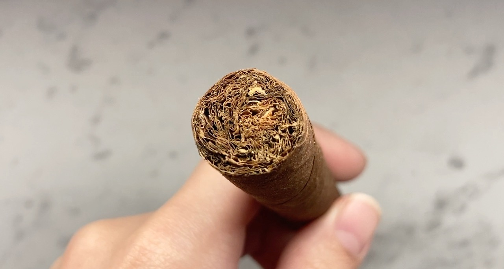
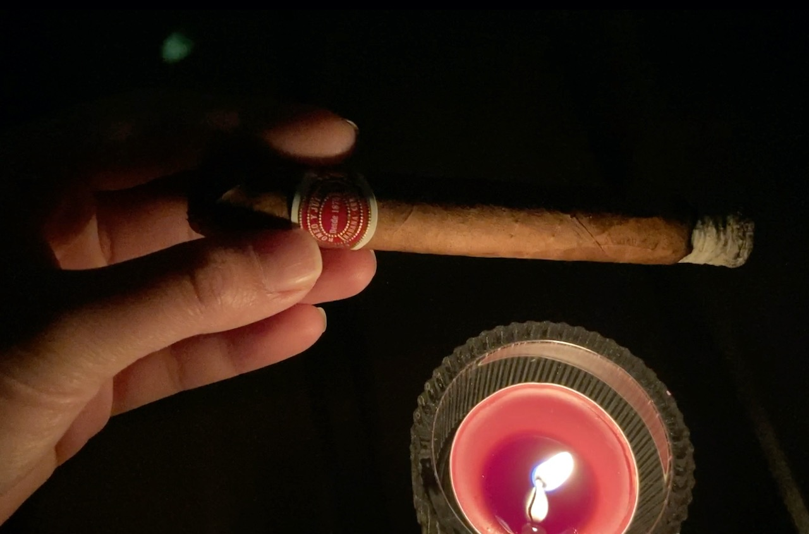
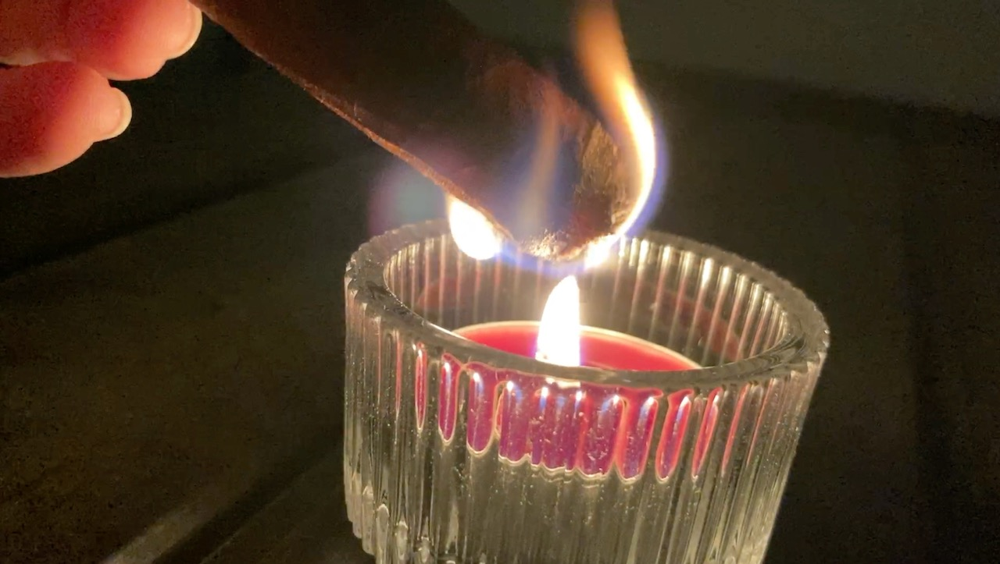
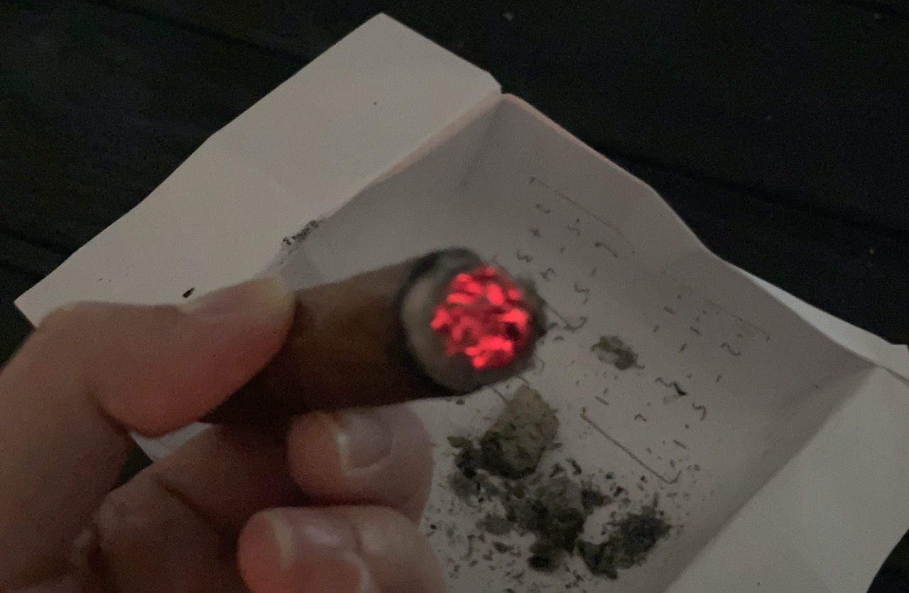
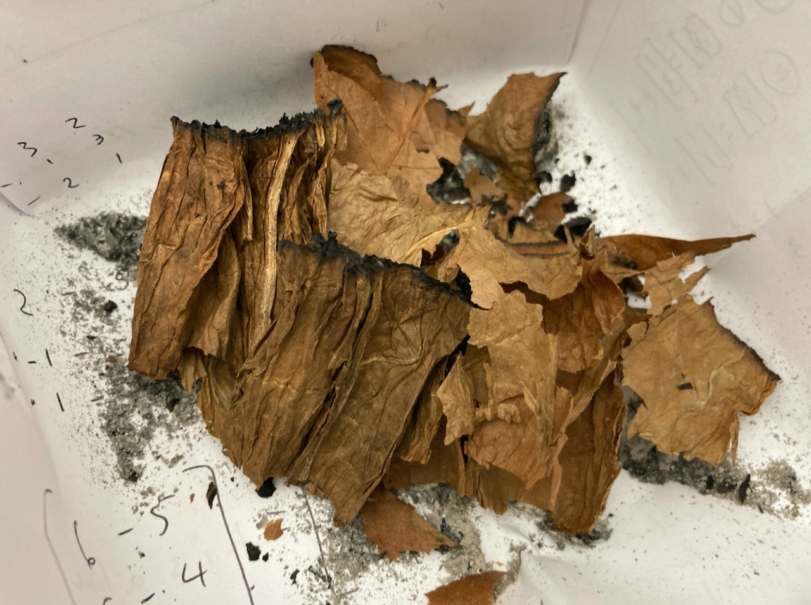
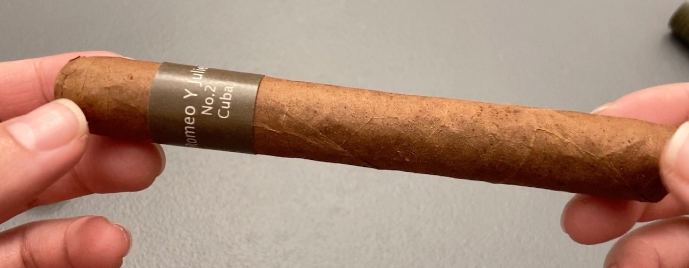
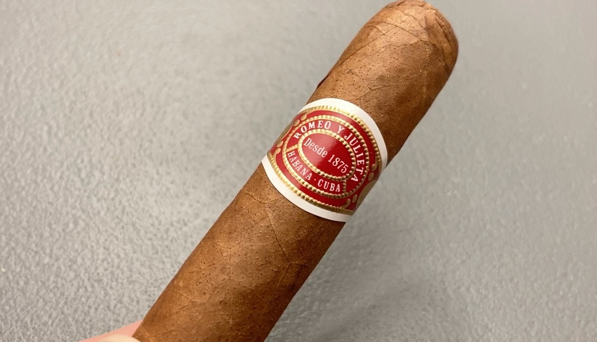

Cigar Review: Romeo Y Julieta No. 2
I should have picked up Wide Churchill instead. I did not enjoy this one.

The reason that I picked up this one over Wide Churchill was because it came in a tube. I thought it can at least last for a few more days, but I didn't think I could smoke again so soon. I would have got Wide Churchill if I knew I could smoke on the same day that I purchased it.

I'm not sure if it is because the cigar was resting in the tube that Romeo Y Julieta No. 2 just felt way more moist than H. Upmann Half Corona. Half Corona was mellow, but crispy. It was probably too dry though. However, No. 2 just feels mellow and soggy. I'm guessing this one is too humid. It's slightly more firm and feels like it has less airflow.

The start of the Romeo Y Julieta No. 2 was pretty good. It has a similar sweet aroma as H. Upmann Half Corona. Creamy and sweet! No. 2 is more prominent with the coffee taste which is nice. But, that was pretty much the only part that I enjoyed.

Midway to the cigar, I had the same issue with H. Upmann Half Corona where the cigar looked like it wasn't burning. I brushed off the ash and relight it. The good sweet flavour was back! For a very short sip though, then it was lost completely.

It transitioned into something like cedar, woody type of scent and it was a bit more sharp. It ended on a leather note which I truly did not favour. Since I did not enjoy this one as much, I ended this cigar a bit earlier than H. Upmann Half Corona.
 
My fingers, my breath were all ended with this woody-leather note which I really dislike. The smell has stuck with me for a couple days after this smoke. I'm not a fan of this one for the flavours. Having that said, I can at least keep the aluminum tube and use it as a carrying case for the time being.

Since my chance for smoking a cigar is super-duper rare, I will not risk it again unless I've tried everything that was top recommended. I think I like sweet cigars more. This is probably a cigar that's loved by many, but sadly it's just not my favourite profile and I'm quite disappointed.
| Where did I get it? | Express News (Metrotown Station Square) |
| Price | About CAD$32 |
| Date of Acquisition | June 3, 2023 |
